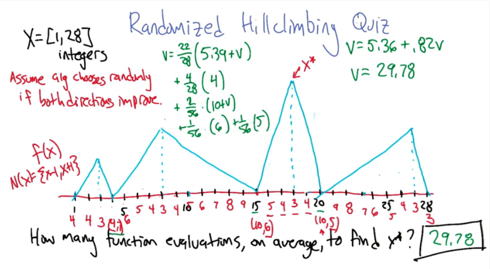

I'd recommend both datasets be classifiers, either both binary or one binary and one multiclass. It'll make your life easier. And you'll be using Decision Trees, SVM, Neural Networks, KNN, and boosted trees
Syllabus (Topics by week)
Classification - process of taking some input x and mapping it to a discrete label
Regression - process of taking some input x and mapping to a continuous domain, possibly infinite
But if the mapping is finite, say real integers, then the regression example could be a classification problem.
Classification Learning, handy terms and definitions
Decision tree learning is a method for approximating discrete-valued target functions, in which the learned function is represented by a decision tree.
from wikipedia : A decision tree is a decision support tool that uses a tree-like model of decisions and their possible consequences, including chance event outcomes, resource costs, and utility. It is one way to display an algorithm that only contains conditional control statements. Decision trees are commonly used in operations research, specifically in decision analysis, to help identify a strategy most likely to reach a goal, but are also a popular tool in machine learning.
Representation vs Algorithm: A decision tree is fundamentally a very simple thing. It is composed of decision nodes based on attributes, and edges which represent the possible values of the attribute. Finally the end points are called leaves and represent the outcome. It should be noted that depending on complexity of the problem (1) there may be several layers to a tree.
Intuition Example
Let's begin our discussion with an example. Your on a date and outside a restaurant. You need to determine to enter or not. All you know is what the restaurant looks like. You can describe the restaurant in terms of attributes such as building material, food type. You can also determine the atmosphere (Fancy/Casual/Dive). You can peer inside to determine how busy it is? Are people inside enjoying themselves. What about your date, partner, the menu/cost? etc etc. Some features may be external and have nothing to do with the restaurant. Is it raining? How hungry are you?
Let's look at a decision tree of our restaurant example
Notice that only the attributes that change are incorporated. The class column represents the outcome. The tree itself (but not the table) represents a candidate concept.
Another way to think of this is a game of 20 questions. The goal is to ask yes/no questions where the answers lead you to what the other person is thinking. When such a game is played the questions should narrow down the smaple space leading you to a narrow answer. While some guessing may be involved it will be rather minimal.
In order to converge in the shortest time possible you want to ask question that reduce the sample space as much as possible. So for example a good first question might: Is it a living thing? The answer to this will immediately divide the world in half. Now we might go so far as to ask if this is the best first question. Where best is defined as leading to the greates reduction in space.
Now that we have a sense of what a decision tree can be the next question is what types of functions can it represent? Think of a logical AND. A and B is true only when A is true and B is true. We could choose A as our first attribute and draw two edges, one for false and 1 for true. The second attribute is B of course, with again 2 edges. Would it matter if we switched A and B in the order of the nodes? For this example there is no difference since A and B are commutative.
How about A logical_or B ? Again this can be represented as a tree and again they are commutative.
How about A logical_xor B ? Yuppers
How can we generalize this for n attributes? How does this affect the size of the tree?
Case 1: Consider the n-or, a logical or on n features, aka the any function.
for n = 2 we need 2 nodes
for n = 3 we need 3 nodes
...
for n attributes we will need n nodes.
We can clearly see there is a linear relationship between the number of attributes and the number of nodes
Case 2: Consider n-xor. Can be generalized using the concept of parity. For example odd parity implies that if the number of true is odd then it outputs true, otherwise it is false.
for n = 3 we need 7 for n = 4 we need 15 ... This is more difficult to see but it is approx $O(2^n)$, which is exponential.
Now of course when dealing with data we often don't know what type of expressiveness it will lead to. A reasonable first choice is $O(n!)$. For each column we have n choices to split on, so split 1 is n. Split 2 is N-1, Split 3 is n-2, etc etc. Finally we have the leaves, which being binary works out to be $2^{2^n}$. This may not seem so bad but it grows extremely rapidly. in fact for just n=6, this works out to be 1.8446744e+19 lol.
LOOP:
A <- best attribute for splitting
node attribute <- A
For each value of A
create a descent of node (child node)
Sort Training Examples
to leaves
If examples are sorted
STOP
else
iterate over leaves - ie split(leaves,subset)How to compute the best attribute?
Information Gain(S,A)
Entropy is defined as $\sum_v p(v) log p(v)$.
Recall that there are two types of Biases: Restriction and Preference.
Restriction Bias
Preference Bias: What type of decision tree is the ID3 biased towards?
Other considerations
How do we adapt a decision tree to model a regression problem? That's in next lecture
The primary difference between classification and regression decision trees is that, the classification decision trees are built with unordered values with dependent variables. The regression decision trees take ordered values with continuous values. A secondary, but just as important, difference is that decision trees require categorical/discrete inputs and output categorical results.
The most basic of regressions is the linear regression model $y=mx+b$. Fitting the model requires determining the line of best fit. ie The model is a linear equation that approximates the output (y) from the given data points x, with the least amount of variance. The most popular and proven way of doing this uses the sum of least squared errors method. In higher dimensions this is the same as minimizing the projection error.
Let's us look at a simple example of this in action.
# Example comes from
# https://realpython.com/linear-regression-in-python/
import numpy as np
import matplotlib.pyplot as plt
from sklearn.linear_model import LinearRegression
x = np.array([5, 15, 25, 35, 45, 55]).reshape((-1, 1))
y = np.array([5, 20, 14, 32, 22, 38])
model = LinearRegression()
model.fit(x,y)
y_pred = model.predict(x)
plt.scatter(x,y, label='Actual')
plt.plot(x,y_pred, label='Predicted')
plt.legend()
plt.show()
Pretty simple eh? Of course it is, it's also called simple linear regression for a reason.
It pays to consider how this is achieved. This will allow to extend this idea to higher dimensions.
The base model is given by $y=mx+b$. So let's consider y and x as vectors.
let (x,y) = [(1,1),(2,1),(3,2)]
then y = mx + b can be written as ( y=Ax ) where A is a matrix valued function
[ 1 [ 1 [ 1
1 = 2 m + 1 b
2 ] 3 ] 1 ]
Simplified
[ 1 [ 1 1 [ m
1 = 1 2 . b ]
2 ] 1 3 ]In this example as well as our illustration above an exact solution is not possible. This is because the y-values are not in the column space of A. Let's switch gears into matrix notation so we may better explain this.
from (https://www.stat.cmu.edu/~cshalizi/mreg/15/lectures/13/lecture-13.pdf)
We wish to fit the model : $Y = \beta_0 + \beta_1 x_ + \dots + \epsilon$
which is the same as : $Y = \beta X + \epsilon$
Where
The X matrix requires a bit of thought. The first column needs to be all ones, because this will incorporates the intercept values $\beta_0$. Subsequent columns are the data points.
For example if we were modelling ( Y = b0 + b1x0 + b2x1 = X$\beta$ ) then X would look like this
1 x01 x11
1 x02 x22
1 x03 x33
1 x04 x33This is also often referred to as the design matrix.
For the time being we will state and use the following without proof.
The least squares solution to approximate p and minimize e is given by
$x^* = (A^T A)^-1 A^T y$
For those interested here is a great explanation and derivation of the MSE in matrix format
https://eeweb.engineering.nyu.edu/iselesni/lecture_notes/least_squares/least_squares_SP.pdf
At each data point we have some error in our prediction
We can define the Mean square error (MSE) as
Background
Let's begin by understanding where the idea of neural netwroks come from. Neurons are a basic building blocks found in brains. A neuron cell takes an input in the form of an electrical charge. It does what neurons do, processes, and outputs it along it's stem where it is distributed to other neurons.
In a similar fashion, neurons can be modelled mathematically. We can build a perceptron, the nucleus of our neuron, that takes some input(s), does something to it, and spits it back out.
Perceptrons were first introduced by Frank Rosenblatt in 1957. It is a simple learning rule, that enables neurons to learn and process elements in data, one set at a time. Two basic types Single-layer and Multi-layer. the perceptron learns the weights for the input signals in order to draw a linear decision boundary.
Links : https://www.simplilearn.com/tutorials/deep-learning-tutorial/perceptron
We can define a perceptron as a simple linear piecewise function that outputs a binary result
Example
$
F(x_1,x_2,\dots,w_1,w_2,\dots) =
\begin{cases}
1 & \text{ if } w x + b \ge \theta \\
0 & \text{otherwise}
\end{cases}
$
Where w is a vector, x is a matrix, and b is the bias (explained later).
This is extremely simplistic however. What our perceptron will do is take weighted inputs and process the result against some type of threshold (this is called activation) different neurons may use different weights as well as different activation thresholds.
Example : x1 + x2 > threshold then fire else no fire. The threshold here can be viewed as a bias since this is equivalent to x1 + x2 - threshold > 0.
NOTE when we begin creating layers of neurons, then all the neurons in the same layer will have the same bias.
NOTE It may not be obvious but the weight in the above equation is 1 and 1. ie (1)x1+(1)x2+bias > 0. We can and will manipulate these weights to achieve different results
The goal of a perceptron is to learn the weights of the input signals in order to draw a decision boundary. It will predict the outcome based on the current weights. Then compare this outcome against the expected outcome (remember this is supervised learning so the outcome is known). The difference between the predicted and expected is the error, which is then propogated backwards leading to an adjustment of the weights. The goal being to minimize the error and converge to accuracy.
Consider:
\begin{align}
W &= \begin{bmatrix}
w_{1} \\
w_{2} \\
\vdots \\
w_{m}
\end{bmatrix},
X = \begin{bmatrix}
x_{1} \\
x_{2} \\
\vdots \\
x_{m}
\end{bmatrix},
\text{ and } Z=\sum w_i x_i=W^T X
\end{align}
with an activation, aka decision, function as
$
\phi(Z) =
\begin{cases}
1 & \text{ if } Z \ge 0 \\
-1 & \text{ otherwise }
\end{cases}
$
Then you should get something like this
Perceptron has the following characteristics:
A single perceptrons by itself is a simple linear function. As such some of the simplest functions that can be modelled using a perceptron are logic gates (AND, OR, XOR). Let's see some examples
LOGICAL AND
Let A & B be our input signals, weights = 0.6, and threshold $\theta$ = 1, then
LOGICAL OR
# importing Python library
import numpy as np
# define Unit Step Function as our activation
def unitStep(v):
return 1 if v >= 0 else 0
# design Perceptron Model
def perceptronModel(x, w, b):
v = np.dot(w, x) + b
return unitStep(v)
# OR Logic Gate : w1 = 1, w2 = 1, b = -0.5
def OR_logicFunction(x):
w = np.array([0.3, 0.3]) # Play around
b = -0.1
return perceptronModel(x, w, b)
# testing the Perceptron Model
test1 = np.array([0, 1])
test2 = np.array([1, 1])
test3 = np.array([0, 0])
test4 = np.array([1, 0])
print("OR({}, {}) = {}".format(0, 1, OR_logicFunction(test1)))
print("OR({}, {}) = {}".format(1, 1, OR_logicFunction(test2)))
print("OR({}, {}) = {}".format(0, 0, OR_logicFunction(test3)))
print("OR({}, {}) = {}".format(1, 0, OR_logicFunction(test4)))
LOGICAL XOR Let's now look at a more complex example, XOR
y1 y2 y3 y4
A B ABand ABor notABand XOR
0 0 0 0 1 0
0 1 0 1 1 1
1 0 0 1 1 1
1 1 1 1 0 0We will create an XOR from 3 perceptrons (AND, OR, and a NOT)
Define:
$\hat{y_1} = \theta(w_1 x_1 + w_2 x_2 + b_{and})$
$\hat{y_2} = \theta(w_1 x_1 + w_2 x_2 + b_{or})$
$\hat{y_3} = \theta(w_{NOT} \hat{y_1} + b_{not})$
Finally
$\hat{y} = \theta(w_{and1} \hat{y_3} + w_{and2} \hat{y_2} + b_{and})$
For the implementation, the weight parameters are considered to be $w_1 = 1, w_2 = 1, w_{NOT} = -1, w_{AND1} = 1, w_{AND2} = 1$
And the bias parameters are $b_{AND} = -1.5, b_{OR} = -0.5, b_{NOT} = 0.5$.
# importing Python library
import numpy as np
# define Unit Step Function as our activation
def unitStep(v):
return 1 if v >= 0 else 0
# design Perceptron Model
def perceptronModel(x, w, b):
v = np.dot(w, x) + b
return unitStep(v)
# NOT Logic Function
# wNOT = -1, bNOT = 0.5
def NOT_logicFunction(x):
wNOT = -1
bNOT = 0.5
return perceptronModel(x, wNOT, bNOT)
# AND Logic Function
# here w1 = wAND1 = 1,
# w2 = wAND2 = 1, bAND = -1.5
def AND_logicFunction(x):
w = np.array([1, 1])
bAND = -1.5
return perceptronModel(x, w, bAND)
# OR Logic Function
# w1 = 1, w2 = 1, bOR = -0.5
def OR_logicFunction(x):
w = np.array([1, 1])
bOR = -0.5
return perceptronModel(x, w, bOR)
# XOR Logic Function
# with AND, OR and NOT
# function calls in sequence
def XOR_logicFunction(x):
y1 = AND_logicFunction(x)
y2 = OR_logicFunction(x)
y3 = NOT_logicFunction(y1)
final_x = np.array([y2, y3])
finalOutput = AND_logicFunction(final_x)
return finalOutput
# testing the Perceptron Model
test1 = np.array([0, 1])
test2 = np.array([1, 1])
test3 = np.array([0, 0])
test4 = np.array([1, 0])
print("XOR({}, {}) = {}".format(0, 1, XOR_logicFunction(test1)))
print("XOR({}, {}) = {}".format(1, 1, XOR_logicFunction(test2)))
print("XOR({}, {}) = {}".format(0, 0, XOR_logicFunction(test3)))
print("XOR({}, {}) = {}".format(1, 0, XOR_logicFunction(test4)))
In the above examples we set the weights by hand, which is arduous and less than ideal. The next two sections illustrate methods for learning the weights.
Operates on the post-activated y-values. Suppose $\hat{y}$ is the predicted outcome and $y$ is the expected. Then we can adjust our weights $w$ in order to "move" $\hat{y}$ towards $y$, using an "error", or distance function.
Define $\hat{y} = \sum w_i x_i \ge 0$
Then let $\Delta w_i = \eta (y - \hat{y})x_i$ where $\eta > 0$ is the learning rate
to adjust $w_i \gets w_i + \Delta w_i$
Notes:
The perceptron learning rule is only good for linearly seperable data points, but gradient descent drops this requirement. Gradient descent is an optimization algorithm that finds the optimum weights to reduce prediction error. This is similar to how Sum of Squared errors (SSE) is the optimal error measure for linear regression.
Formal Definition Wikipedia: Gradient descent is a first-order iterative optimization algorithm for finding a local minimum of a differentiable function. The idea is to take repeated steps in the opposite direction of the gradient (or approximate gradient) of the function at the current point, because this is the direction of steepest descent. Conversely, stepping in the direction of the gradient will lead to a local maximum of that function; the procedure is then known as gradient ascent.
High level Algo:
Let $a = \sum w_i x_i$, $\hat{y}={a \ge 0}$
Define the error metric : $E(w)=\frac{1}{2} \sum_{(x,y) in D} (y-a)^2$
Then we can solve for the minimum by solving the partial derivative w.r.t. weight w
$
\begin{align}
\frac{\partial E}{\partial w_i} & = \frac{\partial}{\partial w_i} [ \frac{1}{2} \sum_{(x,y) in D} (y-a)^2 ] \\
& = \sum_{(x,y) in D} (y-a) \frac{\partial}{\partial w_i} [ - \sum_j w_j x_j ] &\text{using chain rule} \\
& = \sum_{(x,y) in D} (y-a)(-x_i) &\text{derivative is 0 when j not equal to i} \\
& = - \sum_{(x,y) in D} (y-a)(x_i) &\text{re-arranged to look like perceptron rule}
\end{align}
$
Comparison between the two methods:
Why not just do gradient on $\hat{y}$? Because it's not differentiable, it's discontinuous.
Example:
You are trying to predict whether or not you'll go to a party based on three variables.
We could simply weight them evenly but that's not always the case. Chances are some are more important than the others. So let's use the weights (w1=3,w2=2,w3=6,x0=-5=the bias).
This tells us a lot!! If your crush is there then you will travel a great distance, and not care too much about the weather. Rather unsurprising.
So the weather channel says it will be terrible tomorrow, and the distance is calculated to be a 5 hour drive (far far away) but you'r crush will be there. Will you go to the party ?
Yes, because (8(3)+0(2)+1(6)+1(-5) = 1 > 0 TRUE)
So far we have been using a simple less 0 threshold to illustrate the idea of an activation. In many situations though this will not suffice. For example us we wanted to predict someone age we might use a function like max(0,X) to clip the result of our prediction. After all no-one can be less than 0 years old. max(0,X) is part of a family of common activation functions called ReLU (Rectified Linear Unit). It's a piecewise linear function that outputs the input directly if it is positive, otherwise it returns 0.
Here are a few other (Non ReLU) activation functions
Linear : No transformation is applied. Easy to train, but it cannot handle complex functions very well. Are still used for problems where the network predicts a quantity (regression type problems)
Sigmoid : Transforms the input(s) range to between 0 and 1. Often called the logistic function. Was very popular in the early days of machine learning, has since fallen in popularity.
Tanh : Similar to sigmoid but it constrains the output to the range of -1 & 1. Often easier to train than the sigmoid and has better predictive power.
Drawback to both sigmoid and tanh are
Now that we have our perceptrons, a family of differentiable activation functions, and our learning rules, we can finally start to piece together a basic neural network.
Instance based learning methods such as nearest neighbour, and locally weighted regression are conceptually straightforward approaches to approximating real-valued or discrete-valued target functions. Learning in this case is simply a matter of storing an instance in memory. When a new experience is encountered the set of similar instances is pulled from memory and applied to it.
A key difference between instance based methods vs the previous classification methods is that it creates many approximations to the target function, and not just one like a decision tree. It won't generalize. This is good in some ways as highly complex systems can be modelled as a system of less complex methods.
Drawbacks
Knn pseudo code:
Given :
Find : the k Nearest Neighbours $kNN= \{ i : d(q,x_i) \text{k smallest} \}$
Return : Classification, or regression
Learning vs Querying - Tradeoff:
Linear regression is an eager learner, whereas the kNN is a lazy learner, because it only learns when it queries the data.
Let's now work through an example:
Given the following data mapping $R^2 \mapsto R$
X_data = {(1,6),(2,4),(3,7),(6,8),(7,1),(8,4)}
Y_data = {7,8,16,44,50,68}
Given a query point (4,2) what is the result from 1NN and 3NN, using Euclidean distance and Manhattan Distance?
First we need to calculate the distance of each point in X_data to our query point q=(4,2)
You should get the following
Y_data = { 7 , 8 , 16 , 44 , 50 , 68 }
X_data = {(1,6),(2,4),(3,7),(6,8),(7,1),(8,4)}
ManhattanDistance = sum for i to N sum |v1[i] v2[i]| aka L1 Norm
|(1,6)-(4,2)|=|-3-4|=|-7|=7, etc etc ...
Manhattan = { 7 , 4 , 6 , 8 , 4 , 6 }
EuclideanDistance = sqrt(sum for i to N (v1[i] v2[i])^2) aka L2 Norm
Euclidean = { 25 , 8 , 26 , 40 , 10 , 20 }Scenario 1 : Using Euclidean Distance,
1NN = 8
3NN = avg(8+50+68)=42
Scenario 2 : Using Manhattan Distance
1NN = 29.0 avg(8+50)=avg(58)=29
3NN = 35.5 avg(8+50+16+68)=35.5
This all seems rather straight forward right? But consider the following fact: the data here was constructed according to the formula $y=x_1^2 + x_2$. So the real answer is that (4,2) should equal 18=4^2 + 2. Which our kNN procedure was unable to accurately predict. What this tells us is kNN is highly biased towards the provided data, as well as the type of distance function used. What we haven't told you is the underlying assumptions that kNN requires
kNN Bias : Preference Bias: Our belief about what makes a good hypotheses.
Does our formula hold to the above?
Curse of Dimensionality : As the number of features or dimensions grows, the amount of data we need to generalize accurately grows exponentially. This means we will need more and more and more data. I'm sure you can imagine just how much of a problem this can become.
The point here is that adding more data to a problem may seem like a good idea. After all more data to learn from. But in fact it makes the space larger and becomes more computationally intesive and difficult.
Consider the idea of spam email. We could use our previous learning and build a decision tree or kNN algo. But this time we will take another step forward.
We could devise some simple rules:
Each of these is good but simple and would be insufficient on it's own. However, put together they're great but complex. Ensemble methods look at subsets of the data to formulate a simple rule, and combines them into a complex rule that can be generalized. This begs the question ... how do we combine these rules? Well the first option is a simple average of each result from the simple rules.
Example 1
Suppose we have N points, and our learner is a zero'th order polynomial. Meaning each of the data points is taken as a subset and has it's own rule. To combine we will take the mean. Then the output for any point is just the mean of the points, which is a constant. Clearly this is less than ideal.
We want to improve upon it. We have two options to achieve this goal.
Approach 1: Training multiple models
Instead of learning a single classifier we could train a set of different classifiers (let's call them $h_1,\cdots,h_K$. These could be decision trees, perceptrons, Knn(s), and neural networks. To apply these we would let each model predict the output for some test point x'. The response from each model can be thought of as a vote for classification problems.
Approach 2: Training on multiple datasets
In the approach we train the same type of classifier on multiple datasets, comprised of subsets of the total input data. The most common method used here is called bootstraping. In this method we draw a dataset D" from D with replacement.
Process:
Which hypothesis classes benefit the most from this approach?
Disadvantages:
Pitfalls:
Example 2
Suppose we have 10 points. We will take 5 samples of 5 points (with replacement) and train a 3rd order polynomial learner. Finally we will combine each learner by taking the average.
%matplotlib inline
import numpy as np
import pandas as pd
import matplotlib.pyplot as plt
from sklearn.preprocessing import PolynomialFeatures
# Create some sample data
x=np.linspace(0.0, 3.0, num=10)
# pretend to not see this
y= (x**4) + (-5*x**3) + (5*x**2)+ (5*x) + 3
x_train = np.hstack([x.reshape(10,1),y.reshape(10,1)])
# Remove one for testing
x_test = x_train[4,:]
x_train = np.delete(x_train, (4), axis=0)
# plotting dataset
plt.figure(figsize=(10,5))
plt.scatter(x_train[:,0],x_train[:,1],s=15, color='red')
plt.scatter(x_test[0],x_test[1],s=25, color='green',marker='x',)
plt.ylim(0,12)
plt.xlim(-0.5,3.5)
plt.xlabel('Predictor',fontsize=16)
plt.ylabel('Target',fontsize=16)
plt.show()
http://edithlaw.ca/teaching/cs480/w19/lectures/11-ensemble.pdf
Decision trees can be computationally expensive to train making them less than ideal for larger ensembles. The alternative is to use a tree with a fixed structure and random features. A collection of such trees is called a random forest. This improves upon the bagging by reducing the correlation between sampled trees, and taking their average.
Random forests or random decision forests are an ensemble learning method for classification, regression and other tasks that operates by constructing a multitude of decision trees at training time. For classification tasks, the output of the random forest is the class selected by most trees. For regression tasks, the mean or average prediction of the individual trees is returned. Random decision forests correct for decision trees' habit of overfitting to their training set. Random forests generally outperform decision trees, but their accuracy is lower than gradient boosted trees.
Basic algorithm:
Comments:
Extremely Randomized Trees
Basic algorithm:
Comments:
The smaller m is, the more randomized the trees are; small m is best, especially with large levels of noise. Small nmin means less bias and more variance, but variance is controlled by averaging over trees.
Works well when all the features are at least marginally relevant
Wikipedia Article)
Carnegie Mellon
Boosting refers to any ensemble method that can combine several weak learners into a strong learner. The idea behind boosting is that each predictor or model is trying to close the gap, correct the errors from it's predecessors. Instead of learning a single classifier we learn many weak classifiers, that are good at different parts of the sample space.
AdaBoost is a well known implementation and famous example of this.
General Algo:
Formal Algo:
How do we choose $\alpha_t$ for hypothesis $h_t$? It can be shown that, to minimize the error we need to minimize $\prod_t Z_t$.
Define $\epsilon_t = \sum_i^m D_t(i) \delta(h_t(x_i) \ne y_i)$
Then $Z_t = (1-\epsilon) exp^{-alpha_t}+\epsilon_t exp^{\alpha_t}$
So to minimize this
Remark 1: If each classifier is better than random (ie $\epsilon_t < 0.5$), then the AdaBoost algo will achieve a zero training error exponentially fast.
https://machinelearningmastery.com/stacking-ensemble-for-deep-learning-neural-networks/
Stacking, or stacked generalization, involves training a learning algorithm to combine the predictions of several other learning algorithms. The basic idea here is to use a pool of base classifiers, then using another classifier to combine their predictions, with the goal of reducing the generalization error.
MIT - http://web.mit.edu/6.034/wwwbob/svm-notes-long-08.pdf
Wikipedia - https://en.wikipedia.org/wiki/Support-vector_machine
U of Toronto - https://www.cs.toronto.edu/~urtasun/courses/CSC411_Fall16/16_svm.pdf
SVMs came about in the 1990s. Before this only decision trees and NNs were used to sperate non-linear surfaces. However, as we have seen they suffer from local minima and have little theoretical foundations. SVMs represent a new efficient seperability of non-linear regions that use "kernel functions"; they attempt to generalize the idea of "similarity" to new kinds of similarity measures based on matrix dot products. They approach this via optimization, often quadratic optimization, algorithms rather than a greedy search, and to avoid "local minima" traps. The idea behind Support Vector Machines is that the data contains a linearly seperable boundary. Thats not to say that this is explicitly illustrated in the actual data. This may require the addition of a higher dimension.
Support Vectors are the data points that lie the closest to the decision surface/boundary/hyperplane. They are the data points most difficult to classify. They have a direct bearing on the optimum location of the decision surface.
How it's done:
Each of the lines in this image are in fact hyperplanes. However, only one of them is the optimal one, which is the one that maximizes the boundary between the two colours. The points on the edges of the boundary space are defined as the support vectors.
Example 1 : 2dimensional case
Suppose we have some 2 dimensional data $(x_1,y_1),(x_2,y_2),\cdots,(x_n,y_n)$
Some of these are red and some are blue
Assume the data is linearly seperable by their colour dimension
We need to find a,b,c such that
There will be many choices of a,b,c! There are also many ways to find a,b,c!
Illustrated :
A shown in the illustration we define the hyperplanes on either side as
The points on the hyperplane lines ($H_1,H_2$) are the tips of the support vector. Imagine this by drawing three vectors, each of which ends at a point on the boundary. It should be rather obvious that moving one of these three points will directly impact the hyperplane. However moving any point NOT on the boundary, or gutter/margin, will have no effect.
Our next goal is to maximize the distance between the two vectors. we can compute the distance between the vectors by thinking of this as a system of linear equations, and using subtraction.
$
\begin{array}{lcr}
w^T x_1 + b & = & 1 \\
-(w^T x_1 + b & = & 1) \\
\hline
w^T (x_1 - x_2) & = & 2 \\
\hat{w_T} (x_1 - x_2) & = & \frac{2}{||w||} & = & M \text{ Margin }
\end{array}
$
This gives us our margin size which we would like to maximize. Maximization problems are very difficult to solve but minimization problems are much easier, so we can transform this into.
This a well understood and always solvable problem, with a rather nice formula:
$w = \sum_i \alpha_i y_i x_i$
Where $\alpha_i$'s are the learned weights which are non-zero at ONLY the support vectors.
Recall that the support vectors are defined as
$\begin{array}{lcr}
y_i & = & w^T x_i + b \\
y_i & = & \sum_i \alpha_i y_i x_i^T (x) + b & = & \pm 1 \\
\end{array}$
We now use this to build our classification function: $f(x) = sign \left( \sum_i \alpha_i y_i (x_i^T x) + b \right)$
Note the term $x_i^T x$. This is just a dot product of our data, meaning that our entire classification depends only on the dot product of a new point x and our support vectors $x_i's$. Here the dot product is simply a similarity measure. It is the projection of each $x_i$ onto the new x (but it doesn't have to be).
( Note that there is alternate derivation using Lagrangian multipliers )
Life is pretty easy in a 2 dimensional linearly seperable world. Alas life is rarely so kind. In this section we will drop the assumption that the data is linearly seperable. Thankfully, this is where SVMs really start to shine. What we will do is look for a kernel, (a fancy name for a function), that maps our data to a higher dimension.
Consider some function $\Phi$, that maps the x's in our data domain (feature space) to another higher-dimensional space say $\varphi$. ie $\Phi : x \to \varphi$. Just for a moment think if what this is in two dimensions? This is just $\Phi : K(x_i,x)=x_i^T \cdot x$, as shown in the previous section.
We can easily generalize our previous classification function to
$f(x) = sign \left( \sum_i \alpha_i y_i K(x_i,x) + b \right)$
Let's pause to understand what's happening here. We haven't changed our data, we've simply added an term by manipulating the representation. Similar to how 1,(1,0),(1,0,0) all represent the same thing. We don't need to find $\Phi(\cdot)$ we just need it to exist, and it almost all does. Knowing this means we can use just about any K we can imagine. For example suppose that our data is in 2Dimensions and has a circular boundary. Then $K(a,b)=(a^T \cdot b)^2$ will work very nicely.
scikit-learn: https://scikit-learn.org/stable/modules/svm.html#kernel-functions
Has 4 built in kernel functions
Let's look at a simple example ( credit to jakevdp.github.io : https://jakevdp.github.io/PythonDataScienceHandbook/05.07-support-vector-machines.html )
def plot_svc_decision_function(model, ax=None, plot_support=True):
"""Plot the decision function for a 2D SVC"""
if ax is None:
ax = plt.gca()
xlim = ax.get_xlim()
ylim = ax.get_ylim()
# create grid to evaluate model
x = np.linspace(xlim[0], xlim[1], 30)
y = np.linspace(ylim[0], ylim[1], 30)
Y, X = np.meshgrid(y, x)
xy = np.vstack([X.ravel(), Y.ravel()]).T
P = model.decision_function(xy).reshape(X.shape)
# plot decision boundary and margins
ax.contour(X, Y, P, colors='k',
levels=[-1, 0, 1], alpha=0.5,
linestyles=['--', '-', '--'])
# plot support vectors
if plot_support:
ax.scatter(model.support_vectors_[:, 0],
model.support_vectors_[:, 1],
s=300, linewidth=1, facecolors='none');
ax.set_xlim(xlim)
ax.set_ylim(ylim)
%matplotlib inline
import numpy as np
import matplotlib.pyplot as plt
from scipy import stats
# use seaborn plotting defaults
import seaborn as sns; sns.set()
# Support vector classifier - SVM class"
from sklearn.svm import SVC
from sklearn.datasets.samples_generator import make_circles
X, y = make_circles(100, factor=.1, noise=.1)
# clf = SVC(kernel='linear').fit(X, y) # Try this out!
# https://scikit-learn.org/stable/auto_examples/svm/plot_svm_nonlinear.html#sphx-glr-auto-examples-svm-plot-svm-nonlinear-py
clf = SVC(C=1.0, kernel='poly', degree=2, gamma=2).fit(X,y) # Works very well
# play around with the parameters
# clf = SVC(kernel='rbf',gamma='scale').fit(X, y) # Works very well
# Or even Make your own!
def my_kernel(X,Y):
return np.dot(X**2, Y.T)
# clf = SVC(kernel=my_kernel).fit(X, y)
plt.scatter(X[:, 0], X[:, 1], c=y, s=50, cmap='autumn')
plot_svc_decision_function(clf, plot_support=False);
References:
Up until now we've discussed algorithms for applying Machine learning. What we haven't done though is talk about when and where these algo's are appropriate. Let's review the idea of classifiers. Below we can see the results from three algorithms.
What kind of classifier do you think is displayed in each of images
Our goal in this section is to:
To achieve these goals we need to formulize the underlying mathematics, and we will do this using the language of algorithms.
What resources matter in computational learning theory? Time and space are obvious choices. What about data? In particular the number of samples needed. Could you learn from a sample of 10? Probably not!
Define: Inductive Learning: Learning from examples
Let's dive into Number 6 a little more:
learner vs teacher paradigm
Let's illustrate this with an Example:
Imagine a game of 20 questions, with 2 players ( a teacher and a learner ). For our purposes this game of 20 questions will involve trying to determine the person the teacher is thinking of, in 20 questions or less.
We can frame this game as an ML problem where
There's two scenarios here:
Teacher chooses X : The teacher knows the answer and wants to teach the learner how to determine the right answer. Theoretically the teacher could simply ask a yes/no question that lets the learner guess the answer with just one question. This is not good however as the learner hasn't really learned anything.
Learner chooses X : Ideally learner want to ask a question such that the answer will eliminate as much of the hypothesis space as possible. Suppose there is n possible answers, then for any binary response question x there will be two possible outcomes or branches. Outcome 1 learner is left with l possibilities and outcome 2 the learner is left with n-l possibilities. We want the greatest possible division in the sample space, so our goal will be to aim for a 50% split of the remaining space. This means that the best possible outcome will be to ask a question the outcome is l, and n-l with $l \approx n-l$. Now we can score this question as $\frac{l}{n} l + \frac{n-l}{n} (n-l)$. The question with the best score will be the one where $l \approx n-l$. This tells us that the complexity is $log_2 | H |$.
Under Constraints
Let's consider a teacher with constrained queries. In the case the teacher can only propose data within some given boundaries. A good teacher, under this scenario, would propose a learnable hypothesis from just k+2 samples. ie Linear time.
A learner however would not have the same advantages as the teacher. Without any insight into the hypothesis, this approach is more about making the least amount of mistakes. Previously we were able to ask a question that could lead to a split in the sample space.
Naturally we may now ask is there a bounds on our mistake size?
Suppose
Book Mark:
https://www.youtube.com/watch?v=qCegxtChFeM&list=PLPhC147aCdDEHiKiZFD52IkHz6WCNDGaX&index=17
-- What next folks?
The VapnikChervonenkis (VC) dimension is a measure of the capacity (complexity, expressive power, richness, or flexibility) of a set of functions that can be learned by a statistical binary classification algorithm. It is defined as the cardinality of the largest set of points that the algorithm can shatter, which means the algorithm can always learn a perfect classifier for any labeling of that many data points
Product Rule
$P(A \cap B) = P(A|B)P(B) = P(B|A)P(A)$
Sum Rule
$P(A \cup B) = P(A) + P(B) - P(A \cap B)$
Theorem of Total Probability
If $A_1,\cdots,A_n$ are mutually exclusive with $\sum_{i=1}^n = 1$ then $P(B)=\sum_{i=1}^n P(B|A_i)P(A_i) $
Chain rule (Probability)
$ {\displaystyle P(A\cap B)=P(B\mid A)\cdot P(A)= P(A \mid B)\cdot P(B)}$
Bayes rule/theorem
$ Pr(h | D) = \frac{Pr(D|h) Pr(h) }{ Pr(D)} $
Youtube Playlist
Hacettepe University
Let's start with a few assertions: Claim, We want to learn the best hypothesis possible given some data and some domain knowledge. What does best mean? For now let's say that best hypothesis h means the most probable h.
Let's express this goal statistically as $argmax_{h \in H} Pr(h|D)$
Recall Bayes rule/theorem $ Pr(h | D) = \frac{Pr(D|h) Pr(h) }{ Pr(D)} $ ( which relates an event to a previous event existence )
Let's take a moment frame this in ML terms.
Suppose you wanted to know when $Pr(h | D)$ goes up? This will occur when Pr(h) is higher, meaning the hypothesis has a higher prior before you see the data, meaning it will go up after you see the data. Also it will occur when $Pr(D | h)$ goes up which can be interpreted similar to accuracy. This is true when your hypothesis does a better job of fitting your data.
In many learning scenarios the learner will consider a set of candidate hypotheses H with the goal of determining the most probably $h \in H$ given the observed data D. The maximally probable hypothesis is called a maximum a posteriori (MAP) hypothesis. More formally $h_{MAP}$ is a MAP hypothesis provided $ \begin{align} h_{MAP} & = argmax_{h\in H} P(h|D) \\ & = argmax_{h \in H} \frac{P(D|h) \cdot P(h)}{P(D)} \\ & = argmax_{h \in H} P(D|h) \cdot P(h) \\ \end{align} $ In the event that every hypothesis is equally probable a priori, ie $(P(h_i) = P(h_j) \forall h_i \text{ and } h_j in H)$, then the hypothesis are uniformly distributed and we can define the Maximum Likelihood hypothesis $h_{ML}$ as $$ h_{ML} = argmax_{h\in H} P(D|h) $$
Bayes Example 1
Sample space for events A and B
A holds T T F F T F T
B holds T F T F T F F
We Compute
Pr A B B|A A|B
4/7 3/7 2/4 2/3Let's check if Bayes is correct?
P(B|A) = Pr(A|B)Pr(B) / Pr(A) = (2/3 3/7) / 4/7 = 2/4
P(A|B) left as an excercise for the reader
Bayes Example 2
A man goes to the doctor, and gets a test for a disease. The test has a true positive accuracy of 98%, and a true negative rate of 97%. The probability of this disease is 0.8% ( ie 0.008 ). Does he have the disease?
We want to compute the probability that he has the disease given that the test has come back positive. ie Pr(Disease | test is positive ). Using Bayes we know that $Pr(Disease|test=True) = \frac{Pr(test=True|Disease) \cdot Pr(disease)}{Pr(test=True)}$. Using basic probability law we also know that $1=Pr(Disease|test=True)+Pr(!Disease|test=True)$
We can expand $Pr(!Disease|test=True)$ and cancel the denominators
Now we compute
$Pr(Disease|test=True) = 0.98*0.008=0.00784$ and $Pr(!Disease|test=True) = 0.03*(1-0.008)=0.02976$
Now we simply compute the ratios to see that there is a 21% he has the disease and a 79% chance he does not have the disease. ( divide each probability by the sum of the two). Because $Pr(!Disease|test=True) \gt Pr(Disease|test=True)$ we can safely conclude he doesn't have the disease.
So what does this tell us? PIORS Matter! While the test certainly has some impact, it is rather marginal in the whole scheme of things.
For each $h \in H$ calculate $Pr(h|D) = \frac{Pr(D|h) \cdot Pr(h)}{Pr(D)} $
Output $h_{map} = argmax_h Pr(h|D)$ where MAP = maximum a posterirori
Alternatively if we can assume that every hypothesis in H is equally probable
ie $P(h_i) = P(h_j)$ for all $h_i$ and $h_j$ in H
Then we can interpret P(D|h) as the likelihood of the data D given h
Any hypothesis that maximizes P(D|h) is called the maximum likelihood (ML) hypothesis $h_ml$
and is written as $h_{ML} = argmax_{h \in H} P(D|h)$
Let's now describe the needed assumptions
Uniform distribution of hypotheses implies that $Pr(h) = 1/|H| $ for all h in H
P(D|h) is the probability of observing the target values $D=\{d_1,\cdots,d_m \}$ for the fixed set of training instances $\{x_1,\cdots,x_m \}$, in a world where h holds ( is true ). This doesn't mean h is true for every instance, it means that h is the true target concept.
Since we are working with noise free data then
$Pr(D|h) =
\begin{cases}
1, & \text{ if } d_i = h(x_i) \text{ } \forall(x_i,d_i) \in D \\
0, & \text{ otherwise }
\end{cases}
$
This just means that the probability of data D given hypothesis h is 1 if D is ocnsistent with h, and 0 otherwise. This is the probability that you will see data with the given labels in a universe where h is true. Another way of verbalizing this is to say that $Pr(D|h)=1$ if h is in the version space of D.
We can now look at applying the algorithim
Case 1 h is inconsistent with the training data D
then P(D|h)=0 so using Bayes theorem we get P(h|D) = 0 as well
Case 2 h is consistent with the training data D
then
$P(h|D) = \frac{1 \frac{1}{|H|}}{P(D)} = \frac{1 \frac{1}{|H|}}{\frac{|VS_{H,D}|}{|H|}}=\frac{1}{|VS_{H,D}|}$ if h is consistent with D
( aside P(D) can also be derived from the law of total probability )
$ Pr(D) = \sum_{h_i \in H} P(D|h_i) P(h_i) = \sum_{h_i \in VS_{H,D}} 1 \cdot \frac{1}{|H|} + \sum_{h_i \notin VS_{H,D}} 0 \cdot \frac{1}{|H|} = \frac{|VS_{H,D}|}{|H|}$
For every single hypothesis in the version space we are going to add 1, this is equal to the size of version space.
Notice that we haven't said anything about our labels, they could be binary or otherwise. We also didn't asy anything about our version space or our data.
Suppose we have the data $<x_i,d_i>$
$d_i = K \cdot x_i \sim Pr(\frac{1}{2^k})$ for $ k = \{ 1, 2, 3,\cdots \}$
Say
x 1, 3, 11, 12, 20
d 5, 6, 11, 36, 100
1/32, 1/4, 1/2, 1/8, 1/32 - we compute these based on d_i abovePr(D/h) = 1/65536
Let us now put this into action!
Suppose we're given some labeled data $\{(x_i,d_i)\}$ where each label comes from a function with normally distributed noise. ie
$d_i = f(x_i) + \epsilon_i$
$\epsilon_i \sim \mathcal{N}(0,\sigma^2) $
$ \begin{align} h_{ml} & = argmax_h Pr(D|h) \\ & = argmax_h \prod_{i=1} Pr(d_i|h) \\ & = argmax_h \prod_{i=1} \frac{1}{-\sqrt{2 \pi \sigma^2}} e^{\frac{(d_i - h(x_i))^2}{2 \sigma^2}} \\ & = argmax_h \prod_{i=1} e^{\frac{(d_i - h(x_i))^2}{2 \sigma^2}} &\text{since const have no effect on argmax} \\ ln{(h_{ml})} & = argmax_h \sum_{i=1} -\frac{1}{2} \frac{(d_i - h(x_i))^2}{\sigma^2} &\text{take the ln(.) of both sides then the product of the logs is the sum of the components} \\ & = argmax_h -\sum_{i=1} (d_i - h(x_i))^2 &\text{drop constants} \\ & = argmin_h \sum_{i=1} (d_i - h(x_i))^2 &\text{-max = min} \end{align} $
Notice something about the last? That's the sum of square errors!!
$ln(h_{ml}) = argmin_h SSD(d,h)$
Aren't you glad that Bayesian learning is aligned to the other methods like gradient descent and linear regression.
Best Label
Suppose we're given the following data
P(h|D) 0.4 0.3 0.3 our probabilities
h(x) + - - our labels
h1 h2 h3We're given some arbitrary x and we're asked to find the best label. h1 is the likeliest and it votes +, but h2+h3 = 0.6 vote -. What does your intuition tell you? That right we would vote - because the - has a greater likelihood than the +.
In short a weighted vote classifier is the Bayesian optimal classifier.
Goal: To represent and reason with probabilities
Define: A probabilistic graphical model which represents a set of variables and their conditional dependencies using a directed acyclic graph.
A bayesian network graph is made up of nodes and Arcs (directed links) where
Consider the above illustration.
Suppose we wanted to compute Pr(D,S,A,B,E)? Then
$
\begin{align}
Pr(D,S,A,B,E) & = Pr(D|S,A,B,E) \cdot Pr(S,A,B,E) \\
& = Pr(D|S,A,B,E) \cdot Pr(S|A,B,E) \cdot Pr(A,B,E) &\text{expanding the second term} \\
& = Pr(D|A) \cdot Pr(S|A,B,E) \cdot Pr(A,B,E) &\text{Since D depends on A only Pr(D|S,A,B,E) = Pr(D|A)} \\
& = Pr(D|A) \cdot Pr(S|A) \cdot Pr(A|B,E) \cdot Pr(B,E) &\text{simplify Pr(S|A,B,E), Expand Pr(A,B,E)} \\
& = Pr(D|A) \cdot Pr(S|A) \cdot Pr(A|B,E) \cdot Pr(B) \cdot P(E) &\text{since B & E are indpendent}
\end{align}
$
EXAMPLE 1
Let's illustrate with a simple example. Suppose we looked at the two events storm and lightning.
We are given the following data
Storm T T F F
Lightning T F T F
Pr 0.25 0.40 0.05 0.30
- determined by looking outside each day, at 2pm, for a few weeksTogether we can now construct a marginal distribution.
We want to answer
$Pr(\neg storm) = 0.30+0.05=0.35$
$Pr(light | storm) = Pr(lightning=True | Storm=True) = \frac{0.25}{(0.25+0.4)}=0.4615$
What if we add another variable, Thunder, with the following probabilities
As you can imagine this will get more and more complicated.
Conditional Independence
X is conditionally independent of Y given Z if the probability distribution governing X is independent of the value of Y given the value of Z.
That is, if $\forall x,y,z P(X=x|Y=y,Z=z)=P(X=x|Z=z)$
Hence we can write $P(X|Y,Z)=P(X|Z)$
Recall Pr(x,y)=Pr(x)Pr(y) according to independence and Pr(x,y)=Pr(x|y)Pr(y) according to the chain rule which means that Pr(x|y)=Pr(x) (hint just sub eqn 2 into the left side of eq1 and simplify)
Now can we verify this using our thunder+lightning+storm example from above? Yes in fact we can!
Let's say thunder=True and Lightning=True
Then P(Thunder=True|Lightning=False,Storm=False) = 0.04/0.40 = 0.1
Also P(Thunder=True|Lightning=False,Storm=True) = 0.03/0.30 = 0.1
Which means Thunder & lightning are independent of storm.
Goal - Representing and reasoning with probabilities.
We can then fill out our diagram on the left using the probabilities from the right.
NOTE: the arrows do not imply a causal relationship
We could also draw this as a network
Marginalization $P(x)=\sum_y P(x,y)$
Chain Rule $P(x,y)=P(x) P(y|x)$
Bayes Rule $P(y|x) = \frac{P(x|y)P(y)}{P(x)}$
Example
We have a 2 boxes with some coloured balls, from which we will choose 2 balls
We are given a probability table as follows
P(Box = 1) = 1/2
G Y B
Box 1 3/4 1/4 0
Box 2 2/5 0 3/5
We can also draw the following bayes net
Box -> Ball 1 -> Ball 2
------------->QQ : What is Pr(ball 2=Blue|ball 1=Green)?
$ \begin{align} Pr(2=Blue|1=Green) & = Pr(2=Blue|1=Green,box) \\ & = Pr(2=Blue|1=Green,box=1) \cdot Pr(box=1|green) + Pr(2=Blue|1=Green,box=2) \cdot Pr(box=2|green) \\ & = 0 \cdot Pr(box=1|1=green) + \frac{3}{4} Pr(box=2|1=green) \end{align} $
We compute the first term
$
\begin{align}
Pr(box=1|1=green) & = \frac{Pr(1=green|box=1) \cdot Pr(box=1)}{Pr(1=green)} \\
& = \frac{ \frac{3}{4} \cdot \frac{1}{2} }{Pr(1=Green)} \\
& = \frac{ \frac{3}{8} }{Pr(1=Green)} \\
\end{align}
$
Now we compute the second term
$
\begin{align}
Pr(box=2|1=green) & = \frac{Pr(1=green|box=2) \cdot Pr(box=2)}{Pr(1=green)} \\
& = \frac{ \frac{2}{5} \cdot \frac{1}{2} }{Pr(1=Green)} \\
& = \frac{ \frac{1}{5} }{Pr(1=Green)} \\
\end{align}
$
Now we put back into the first equation ( and cancel the denominators to save some typing )
$
\begin{align}
Pr(2=Blue|1=Green) & = 0 \cdot Pr(box=1|1=green) + \frac{3}{4} Pr(box=2|1=green) \\
& = 0 \cdot \frac{15}{23} + \frac{3}{4} \cdot \frac{8}{23} \\
& = \frac{6}{23} \approx 0.26
\end{align}
$
https://www.youtube.com/watch?v=uACvhE19c_M&list=PLPhC147aCdDGeNEl6OPqf1gLJAf9AF73p&index=19
Input space X
Objective function $f: X \rightarrow R$ (aka Fitness function)
Goal: Find $x^* \in X s.t. f(x^*) = max_x f(x)$
Uses :
Basically they can be used whenever you have a scenario where the inputs have a scores (such as accuracy or error rate). So any of our supervised learning algo would benefit from these.
Consider
Ex 1 $X=(1,2,\cdots,100)$ and $f(x)=(x \; mod \; 6)^2 \;mod \;7 \;- \;sin(x)$
What is $x^*$? We could simply enumerate the values, but this one is pretty ugly lol! If you were to graph this you would find that the maximum is approximately at x=11. so we say $x^* = 11$
Ex 2 $X=\mathbb{R}$ and $f(x)=-x^4 + 1000x^3 - 20x^2 + 4x -6$
What is $x^*$? Enumeration won't work here because the domain is far too large. So we can use some calculus to find the deriviative and then try to solve for the roots. In this case the derivative is a cubic function $-4x^3 +3000x^2 - 40x + 4 = 0$. Thankfully this is a rather nice and smooth function, (Try it out). You should see that the maximum is around the 750 mark. You could also solve for the max using newton's method. But for now this will suffice for our discussion.
Basic Optimization Approaches
Fail when
This is when you turn to radnomized optimization
Algo - Steepest Ascent
Init Guess x in X
Repeat:
let n* = argmax(n in N(x)) f(n)
if f(n*) > f(x)
then x=n
else
stopThis will almost always locate the closest maxima. Which may not necassarily be the optimal or global maximum.
Example
Consider: Let X be a 5-bit sequence of 1,0's, let f(x) = # of correct bits
Iter 1 | Iter 2 | Iter 3
x f(x) | x f(x) | x f(x)
00000 2 | 10000 3 | 10100 4
10000 3 | 11000 2 | 00100 3
01000 1 | 10100 4 | 11100 3
00100 3 | 10010 4 | 10110 5 - bingo
00010 3 | 10001 2 | 10101 3
00001 1 | |Algo - Random Restart
The process is simlar to above, But to prevent getting stuck in a local optimum you choose a random x.
In other words
Here's an example
How many restarts or functions evaluation will be needed too converge to $x^*$ first consider each point as a possible starting point, out of a total of 28 possible points as a first choice you'll find that the average is approx 5.39 evaluations to locate the local optimum
V = (22/28)(5.39+V) +(4/28)(4)+(2/56)(10+V)+(1/56)(6)+(1/56)(5)
( we add V to some terms because the scenario leads to local optimum, so we need to restart )
V = 5.36 + 0.82V
V = 29.78 function evaluations ( on average of course )

Instead of waiting to hit a local optimum perhaps we should take a searching approach, we should explore the space. Welcome to Simulated annealing (next section)
Related to Metropolis-Hasting algorithm
P(x,xt,T)
= 1 if f(xt) >= f(x)
= e^( (f(xt)-f(x))/T ) otherwise
Algo from wikipedia
Let s = s0 be our initial state
kmax = the max number of steps
P = the acceptance probability function
For k = 0 through kmax (exclusive):
T temperature( 1 - (k+1)/kmax )
Pick a random neighbour, snew neighbour(s)
If P(E(s), E(snew), T) random(0, 1):
s snew
Output: the final state sNote that
Interesting Lemma
Pr(ending at x) = $\frac{e^{f(x)/T}}{Z_t} $ which just happens to be the boltzmann distribution from physics
Imagine you are looking at a fitness function in a 2 dimensional space. It will appear similar to a countour map like below.
Similar to before we want to find the optimum but only looking at 1 dimension at a time would be less than ideal. We should look at multiple dimension in unison.
Some Terminology is a little different
New terminology
Basic Algo
Let P0 = Initial population of size K
Repeat until converged
Compute fitness of all x in Pt
Select "most fit" individuals ( say top 50% by weighted probabilities )
Pair up individuals
replacing "least fit" individuals using mutation/crossoverNotes
Example - Crossover
Let X = 8-bit strings
Charles 01101100
Shiela 11010111
Crossover = bits 1-4 from 1 and 5-8 from 2
Offspring
Charles+Shiela = 01100111 we will call joni
Shiela+Charles = 11011100 we will call codyRecall
Supervised Learning: Labelled training data to generlize labels to new instances.
- function approximation
Unsuprevised learning: Making sense of unlabelled data
- Data description
Given : a set of objects X and inter-object distances $D(x,y)=D(y,x) \; for \; x,y \in X$
- D need not be rigid metric (like Euclidean) it simply need to be a metric describing two points
Output : Partition $P_D(x) = P_D(y)$ if x,y are in the same cluster
- Here P describes some partition defined for some distance function D
- One trivial partition can be $\forall x \; P_0(x)=1$
- Another trivial partition is $\forall x \; P_0(x)=x$
- they tell you nothing though
Single Linkage Clustering
Here's an example represented two clustering in a tree format.
Running time of a single link clustering. At every moment in time (k) we need to compute the two closest points which is O($n^2$) because this is for each possible pair. Putting these together we get O($n^3$).
Issues with SLC: Clusters will tend to lean towards connected neighbouring points, which is not necassarily accurate. For more elaborate patterns it could identify groups inside another group (think inner points as one cluster and outer points as another cluster).
K means is similar to the single linkage but rather than using a neighbour to neighbour approach it uses a means.
K Means Clustering
Lets take a look at K Means in Euclidean space
Let $P^t(x)$ be a partition/cluster of object x at iteration t
Let $C_i^t$ bet the set of all points in a cluster $i = \{x \; s.t. \; P(x)=i \}$ at iteration t
Then $\large center_i^t = \frac{\sum_{y \in C_i^t} y}{|C_i|} $ is the center of a cluster (aka centroid)
For each iteration t
set $P^t(x) = argmin_i || x-center_i^{t-1} ||_2^2 $
compute $\normalsize center_i^t = \frac{\sum_{y \in C_i^t} y}{|C_i|} $
now repeat
Notice the recursion here. Each time we update P we use the previous centre, meaning that the center is moving. Each time we compute the center the set of all points in $C_i^t$ has changed from the previous iteration.
K means as optimization
K Means is a lot like the Hill climbing method from our previous chapter.
Notice also how similar the score (error) metric is to the $P^t$ from the iterative update algorithm. This implies that the error cannot go up, it must remain the same or go down. Otherwise the argmin wouldn't select it. The fancy term for this is Monotonically non-increasing in error.
Properties
Soft Clustering
Similar to the K Means it uses a probabalistic processes.
Algo
Goal is to find a hypothesis $h=<\mu_1,\cdots,\mu_n>$ that maximizes the probability of the data (Maximum Likelihood). The ML mean of the Gaussion $\mu$ is the mean of the data! and this leads us to our next topic Expectation Maximization.
Only briefly touched up in the lectures
https://www.youtube.com/watch?v=QQJHsKfNqG8&list=PLPhC147aCdDHxl_NtL9iV5sVA7fMXxcpv&index=22
https://youtu.be/qMTuMa86NzU Lectures did not cover this very well so we resort to a link provided by the Class forum (Ed Discussions)
Another common technique for clustering is Gaussian Mixture Models, aka Expectation Maximization. Probability density estimation
Recall: K-Means
Gaussian Mixture Models
Consider the two clusters in the right hand side of the image. There are two clusters both centred at the same mean. K Means has diffuciulty with this. GMMs are an extension of the Kmeans models, where clusters are modelled using gaussian distributions. Where each cluster will have not only a means but also a covariance which helps explain their ellipsoidal shape. We can then fit the model by maximizing the likelihood of the observed data. We do this with an algorithm called EM, for expecation maximization, which assigns each sample to a cluster with a soft probability.
What this does is actually create a generative model for the data X, a probability model. Which allows us to generate data, impute missing data, etc etc
We can interpret this in a simple generative way.
To draw a sample from X, P(x)
Models like this are often called a latent variable model. We observe x, but z is hidden. Typically features will be in higher dimensions so we use the Mutlivariate normal distribution, and it's first and second moments Maximum Likelihood estimates.
Maximum Likelihood Estimates
EM Algorithm
0. Initialization
Start with clusters, Determine mean, cov, and size (pi)
1. E-Step - Expectation
For each Datum (example) x_i
Compute r_ic (the probability that it belongs to cluster c)
Compute its probability under model c
Normalize to sum to one (over clusters c)
r_ic = pi_c * N(x_i; mu_c, cov_c) / ( sum_c' pi_c' * N(x_i; mu_c', cov_c') )
c' here is all clusters
Output -> r_ic is M by k matrix (num_of_data by num_of_cluster)
-> sums to one over index c
2. M-Step Maximization
Start : r_ic from step 1
Update: mu_c,cov_c,pi_c (size)
For each cluster (Gaussian)
set z=c
update parameters using weighted data points
m_c = sum_i r_ic (Total responsibility allocated to cluster c)
pi_c = m_c / m (Fraction of total assigned to cluster c )
mu_c = (1/m_c) * (sum_i (r_ic * x^(i))) (Weighted mean of assigned data )
cov_c = (1/m_c) * (sum_i (r_ic * (x^(i)-mu_c).T * (x^(i)-mu_c) )) (Weighted covariance etc)Observations & Remarks
What should we do?
Choosing the number of clusters?
Summary
Gaussian Mixture Models
Expectation-Maximization
Selecting the number of clusters
Goals: Knowledge Discovery, Interoperability & Insight.
Curse of Dimensionality, The amount of data you need grows exponentially with the number of features you have. By reducing our dimensions we can reduce the difficulty of the problem.
Suppose we have N features and we want to reduce to M features where M <= N. How hard is this problem?
To do this we need to come up with some sort of function that returns a score. We could choose M from N ie $\binom{N}{M}$. It turns out this is a well known problem which NP-Hard.
There are two general approaches to this problem.
Filtering runs the features through an algo/search that maximizes some criteria and outputs fewer features, which are then passed into some learning process that outputs a model.
$\color{green}{\text{Pros: generally better speed}}$
$\color{red}{\text{Cons: Can also be slower because you look at features in isolation}}$
$\color{red}{\text{Cons: Ignores the learning problem}}$
Note that you can use the labels in the search algo. In fact Information Gain is often used in the search box. You could even go so far as using a decision tree to determine what should be passed to a Neural Network. Another possibility is Variance or Entropy. What about using a Neural Network and pruning the lowest weighted features. You could prune correlated or dependent features.
Wrapping has a slightly different approach. Your N features are run through an algo/search/subsetter that then asks the ml model to perform it's work. Here the ML quality is passed back as a quasi-score value which is then used by the algo to determine the final features.
Pros: Takes into account model bias, score and learning
$\color{green}{\text{Pros: Takes into account model bias, score and learning }}$
$\color{red}{\text{Cons: Very slow!!}}$
Local searching can be useful here (hill climbing, or really any other randomized optimization approach). Should avoid an exhaustive search here as this can make the problem under a worst case scenario.
Forward/Backwards Searching
Forward searching is another useful approach. Start by passing each feature one at a time, keep the best. Then go through the remaining features and pass it in in addition to the first. Again we include the one that is the best addition. We can repeat this as needed. We can also add a threshold to ensure we don't add features for diminishing gains.
The inverse approach to this is called backwards searching, and represents the inverse scenario. Begin with all of the features and remove each one, one by one, and compute. The one that has the least impact can be dropped. You again repeat the process until you get to a level where removal has a cost that is too high.
Example : What is the smallest set of features sufficient to get zero training Error?
a b c d Label
0 0 1 1 -
0 1 1 0 -
1 0 1 0 -
1 1 1 0 +
Decision Tree
Perceptron with w^T(x) > 0Suppose we use Decision Tree first. If you draw a DT you can quickly see a,b are needed. In fact that's all that's needed.
Now let's take a look at the perceptron. If you only include a,b then we can't do it. If only because our activation function forces us to go through the origin, and we can't seperate the points and go through the origin. We will need to include the column c. In fact taking w = [1, 1,-1] will allow us to seperate the two labels.
Relevance
Let B.O.C. = Bayes Optimal Classifier
Usefulness
Relevance $\sim$ Information
Usefulness $\sim$ Error given a Model/learner
We usually care more about usefulness, but relevance is what we generally use to get there.
Problem: How to pre-process a set of features to create a new, smaller or more compact, feature set; while retaining as much relevant and useful information as possible.
ie $X \to \mathbb{F}^N \leadsto \mathbb{F}^M$ where $M \lt N$ (generally) and $P_x^T$ (usually)
Here $P_x^T$ is a transformation/projection matrix. Is a linear projection that transforms $\mathbb{F}^N$ resulting in $\mathbb{F}^M$. ie $(x_1,x_2,x_3,x_4) \to (2x_1 + x_3)$, which is a new feature. This may remind you of SVM kernels, but those were generally non-linear and added dimensions. This is the inverse, of the SVM, and helps us to overcome the curse of dimensionality.
Information Retrieval: Ad Hoc problem is when you have a lot of data and you want to retrieve the data relevant to a particular query, string etc. (Also known as the Google problem lol). Consider the scenario where the data is documents. The features in the document are a collection of words. I'm sure you can already see the curse of dimensionality creeping in. There are many words, with multiple variations, with many contexts leading to different meanings (polysemy). Apple: is a fruit, computer company and a music company. Another challenge is synonomy: same meaning different representations (Car, Automobile, vehicle etc, etc). So how do we handle these situations?
We won't derive the theory, we will simply summarize the key points.
PCA comes from an old problem called the eigenproblem, it describes the direction(s) of maximal variance. Remember that variance is information, and we want to keep as much as possible. Suppose we have some two dimensional data with some variance. If we project the data onto each axis then much of the variance would be lost.
But if we determine the vector with maximal variance then we can apply a simple linear transformation and retain the info. Once it has found the maximal direction then PCA will find the mutually orthogonal vector, which it terms the second component.
It can be shown that it also provides a basis for the best reconstruction: If you reconstruct the data using only the first component then the reconstruction, in the original space, will have a lower L2 error than any other possible reconstruction, or projection.
Another interesting property of PCA is that if you start with N dimensions then it returns N dimensions with associated eigenvalues that are monotonically decreasing. This allows us to focus on the greatest eigenvalues that reflect the variance. We can throw away as many of the smaller values as we choose to reduce our dataset.
HINT In practice it is best to subtract the mean of the data in order to centre it about the origin (0,0). If you don't do this it can confuse correlation, but if you do it captures correlation.
https://www.youtube.com/watch?v=2WY7wCghSVI&list=PLPhC147aCdDEwMz9G1icZAIPyuIc-Zm6J&index=8
PCA - Correlation Measure, maximizing variance
ICA ( Let X be the original features, and Y are the new ICA features)
BSS Example: Imagine there are three people in a room and they're all talking at the same time, and we record this with three microphones. Then our recording actually contain three sounds. Now ICA will take this single recording and decompose it into three different independent vectors, aka features. This is known as the BSS problem, blind source seperation.
PCA v ICA
PCA ICA
Y N - Mutually Orthogonal
N Y - Mutually Indepepndent
Y N - Maximal Variance
- PCA looks for gaussian dist'n which effectively maximizes variance
- ICA is looking for non normal ness
N Y - Maximal Mutual Info
Y N - Ordered Features
Y Y - Bag of Features (they both produce a set of feature vectors)Effectively they're both trying to do the same thing (reconstruct the data) but they do it in very different ways.
What both of these are great at is helping you to understand the fundamental structure and causes of our data.
Also known as Random projections, generates random vectors to project your data onto it. This may sound silly but it works remarkably well. In doing so it still manages to pick up on some of the correlation. It often won't reduce the dimensions as much as the other two approaches. One big advantage of RCA is FAST but it's also CHEAP and SIMPLE to implement.
Finds a projection that discriminated based on the label (Where as the previous method don't care about the potential target)
https://www.youtube.com/watch?v=hKc1MKo83NM&list=PLPhC147aCdDHpM63qVDu4OzZS93Nb7a3b
Information theory is not really part of machine learning but it is heavily used in ml. Consider the following simplisitc learner.
We want to understand how the inputs provide information to the result y. We will look at concepts such as Mutual information and entropy which come from Information theory. Claude Shannon (bell labs) looked at the problem of sending information from point a to point b. Consider sending the information of ten coin flips. A fair coin sends the message HTHTHHTTTT, an unbiased coin has the message HHHHHHHHHH. How much info needs to be sent? well the fair coin requires 10 bits, one for each flip. But the biased coin needs nothing! because it is known to be biased so it's message is already known. This leads us to a definition of entropy: The minimum number of yes/no questions that need to be asked to get the message.
The greater the uncertainty the greater the entropy, but the more information contained.
The greater the certainty the lower the entropy, and the less information is conveyed.
Example: Suppose we look at the letters A,B,C,D. Each of these appear with frequency 25% and can be encoded with 2 bits per symbol
All symbols get two bits because each of them is the same in
Pr Bits
A 0.25 00
B 0.25 01
C 0.25 10
D 0.25 11Then 01-00-11 message == BAD
What if we modify the probabilities
Pr Bits Root -> 0 -> A 0
A 0.50 -> 1 -> 0 -> D 10
B 0.125 -> 1 -> 0 -> B 110
C 0.125 -> 1 -> C 111
D 0.25in this case we can devise an encoding using a decision tree ( see the right hand side )
So what's the expected message size in this new language?
$\sum P(s) \cdot \#(S)$ ( ENTROPY formula )
$= 1 \cdot P(A) + 2 \cdot P(D) + 3 \cdot P(B) + 4 \cdot P(C)$
$= 0.5 + 0.5 + 0.375 + 0.375$
$= 1.75$
This is $\sum P(s) \cdot \#(S)$ one way to describe entropy but it's not very precise.
Often you will see it written as $\sum P(s) log(\frac{1}{P(s)})$
or even more simply as $- \sum P(s) log(P(s))$
Information between two variables
Joint Entropy $H(x,y) = -\sum P(x,y) log(P(x,y))$
The information contained in multiple variables
Conditional Entropy $H(y|x) = 0 \sum P(x,y) log(P(y|x))$
If x and y are independent then we can say that
$H(y|x) = H(y)$ since x has no releveance to y, and y gets no information from x
$H(x,y) = H(x) + H(y)$ since independence implies 0 correlation
Mutual Information $I(x,y)=H(y) - H(x|y)$ Is a measure of the reduction of randomness given knowledge of another variable
Example 1 2 independent coins, P(A)=P(B)=0.5
P(A,B) = 0.5*0.5
P(A|B) = 0.5
H(A) = 1 = -sum P(A) log P(A)
H(B) = 1
H(A,B) = 2 = -sum P(A,B) log P(A,B)
H(A|B) = 1
I(A,B) = 0 = H(A) - H(A|B) = 1-1 = 0
Which makes sense, they're independent. meaning no mutual informationWhat if they're DEPENDENT?
P(A)=P(B) = 0.5
P(A,B) = 0.5
P(A|B) = 1 = P(A,B)/P(B)
H(A) = 1 = -sum P(A) log P(A)
H(B) = 1
H(A,B) = 1 = -sum P(A,B) log P(A,B) = -2(0.5 log 0.5) = -2*-1 = 1
H(A|B) = 0 = -sum P(A,B) log P(A,B) = -2(0.5 log 1) = -2*0 = 0
I(A,B) = 1 = H(A) - H(A|B) = 1 - 0 = 1Kullback-Leibler Divergence (aka KL Divergence)
Measures the difference between two distributions
$D(p || q) = \int P(x) log( \frac{p(x)}{q(x)} )$
Recall from the start of our discussions
To motivate our discussion of RL let's consider the following Grid World
_ _ _ G
_ B _ D
S _ _ _
S - Starting Point
_ - represent an available space
G - is your goal
D - represents danger
You have 4 possible actions to choose from : Up, down, left and right
Only one rule you can't move off the gridQ: Given this world, and the actions, what is the shortest path to the goal? (Hint it's 5)
Clearly there are multiple paths to reach the goal. And many of these are equal to each other.
This is too easy of course, so we introduce some stochasticity. Let's complicate this by introducing probabilities? Suppose we say that each action has a probability of success equal to 0.8%. And there's a 0.1 probability of moving at a right angle. 0.1% you go up-right, and 0.1 you go up-left.
Well now our 5 movements has a probability of 0.32776% of being executed successfully in sequence
$(0.8^5)*(0.1^4*0.8)= 0.32768 * .00008 = 0.32776$
Define
The above is how we define the MDP problem, the policy is the solution that we are looking to determine.
RL talks about policies, a function that tells you what action to take for all possible states you are in. If you have a policy, and it is an optimal one, it will guide you in any situation. What the policy doesn't tell you is 2 or more steps into the future.
Let's talk about rewards. In a RL grid world we will need to determine a sequence of actions that can lead to some outcome, aka our reward. Rewards can, and will, be both positive and negative. But the outcome could be determined by actions at the start. So in a sense there are two rewards: the immediate and the delayed. Another often used term for this is Temporal Credit Assignment.
Suppose that the rewards function is defined as $R(s)=-0.4$, except for two squares where the reward is -1, and +1 is the reward for reaching the goal square. Let's revisit our example from earlier.
R(s)=-0.4 for each _ square
_ _ _ +1
_ B _ -1
S _ _ _
Optimal Policy for R(s)=-0.4
> > > +1
^ B ^ -1
^ < < <
What if R(s) = +2? or R(s) = -2
<> <> < +1 > > > +1
<> B < -1 ^ B > -1
<> <> <> <> > > > ^
<> because it doesn't matter which action you takeWhat may not be so obvious in the above is that there are implicit assumptions.
Infinite horizons: If this were not true then the case of R(s)=+2 would not go into an infinite loop. What if we placed a constraint such as 3 or 4 step limit, then our risk tolerance would go up. Also our original policy was predicated on a policy giving an action for any state, but this is true only when there is an infinite horizon. So now policy depends on state and time. ie $\pi(s,t)=a$ ( we will not go into this here but it is important to keep in mind )
Utility of sequences: (Stationarity of preferences) So far we have considered the reward for each action, as well as the reward for a sequence of states.
if $U(s_0,s_1,s_2,\cdots) > U(s_0,s'_1,s'_2,\cdots)$
then $U(s_1,s_2,\cdots) > U(s'_1,s'_2,\cdots)$ notice that the start state has been removed $s_0$.
Suppose two sequences start at the same state but differ in their sequence and one has greater utility than the other. Then we should prefer the greater of the two in any state. The interesting outcome of this is that it allows us the options of adding different sequences of states, where we can of utility in terms of rewards. We can compute the reward for two subsets of sequences starting at the some point, and choose the greater of the two as our optimal policy.
Mathematically : $U(s_0,s_1,s_2,\cdots) = \sum_{t=0}^{\infty} R(s_t)$
There is a problem here that is not so obvious. Consider two grid worlds: in G1 the rewards are steady at +1 per time step, and in G2 they alternate between +1, and +2. Which of the two is better? Well neither, because both sum to infinity when there is an infinite horizon!
So let's make a tweak, our new equation :
$U(s_0,s_1,s_2,\cdots) = \sum_{t=0}^{\infty} \gamma^t R(s_t)$ for $0 < \gamma < 1$
We've added what could be called a discount factor.
This is still problematic and difficult to work with, so we will place a maximum boundary, $R_{max}$ which we can solve because it is a geometric series.
$\sum_{t=0}^{\infty} \gamma^t R(s_t) \leq \sum_{t=0}^{\infty} \gamma^t R_{max} = \frac{R_max}{(1-\gamma)}$
Now we can add an infinite number of numbers, and come up with a single number. Furthermore our intial assumption can still hold ( Infinite Horizons, and Utility of sequences ). To understand why the conclusion is true just solve for x using a geometric series ie $\sum_{t=0}^{\infty} \gamma^t = \frac{1}{1-\gamma}$
Define $\pi^* = argmax_{\pi} E[\sum_t \gamma^t R(s_t) | \pi ]$
Which is the policy that maximizes our long term rewards
Now we can define the utility of the state as
$U^{\pi}(s) = E[\sum_t \gamma^t R(s_t) | \pi , s_0 = s ]$
This tells us that how good it is to be in a state is is measured by what we can expect to see from that point on given that we are following some given policy from that point onwards.
IMPORTANT $R(s) \neq U^{\pi}(s)$
R(s) is immediate reward or feedback, whereas Utility is long term, or delayed, rewards.
Now we modify the optimal policy equation to incorporate Utility, which yields
$\pi^*(s) = argmax_{a} \sum_{s'} T(s,a,s') U^{\pi}(s')$
Which says that the optimal policy at a state s is to take the action a that maximizes our expected utility. Remember that T is a probability, or transition, matrix.
NOTE Going forward whenever we refer to U it will be assumed to be the U under an optimal policy.
Bellmann equation : $U(s) = R(s) + \gamma \cdot max_{a} \sum_{s'} T(s,a,s') U(s')$
How are we going to solve this? The prescence of the max makes this nonlinear. There are n-equations here in n-unknowns, in a nonlinear system. So we take an algorithmic approach
Value Iteration
Init : start with some arbitrary utilities
Loop : update utilities based on neighbours
repeat until convergenceUpdate equation : $\hat{U}_{t+1}(s) = R(s) + \gamma \cdot max_{a} \sum_{s'} T(s,a,s') \hat{U}_t(s')$
Here's an example in action
https://www.youtube.com/watch?v=doxTNCH7oHc&list=PLPhC147aCdDHiNV6t86zukzX_VTw1ZGAh&index=26
Policy Iteration ( Finding Policies Algo )
To calculate $U_t^{\pi}$ we use bellmann, modified
$U_t(s) = R(s) + \gamma \cdot \sum_{s'} T(s,\pi_t(s),s') U_t(s')$
Note that the action a has been replaced by $\pi_t(s)$
Furthermore, this is n-linear equations in n-unknowns, and can be solved using our standard methodologies (Linear Algebra)
In the previous section we laid the foundation for reinforcement learning in terms of MDPs.
RL Api
MDP Approach (PLANNER = Value iterations or Policy Iteration)
Model --> PLANNER --> Policy Planning
(T,R) Pi
Transitions --> LEARNER --> Polciy Reinforcement Learning
<s,a,r,s'>*Where does RL come up? Once upon a time in 1930s, people experimented with an animal in box. They placed the anomal in box with a light and two holes leading to a different outcomes. A red light would signify that there was cheese outside hole number 1, and a blue light would signify that the cheese was outside hole number 2. What they observed that after multiple trials the animal would demonstrate a strengthened stimuli. It would make less mistakes as it learned which hole leads to a reward given the colour of the light. ie it learned "reward maximization".
There are two more subprocesses that relate the above processes
Transitions --> MODELER --> model
Model --> SIMULATOR --> transitionsHow does this work ?
|-------------------------------------------|
model --> | SIMULATOR --> transitions --> LEARNER | --> policy ( aka RL-based planner )
|-------------------------------------------|
transitions --> | MODELLER --> model --> PLANNER | --> polciy ( aka Model-based Reinforcement Learning )
|-------------------------------------------|Three Approaches to RL
We will be focusing on the middle approach.
Let's take a look at an alternate approach to the value function.
From Before
New
Now using Q we could rewrite $U(s)$ and $\pi(s)$ as
How Do we estimate Q?
In general we will not have the reward function, we only have the transition function to learn from. In order to learn from this we need to experience the world.
In our current state s we take an action a, and observe the reward we receive r and the state we end up s'
Now we estimate
Aside $V \xleftarrow{\alpha} x$ is just short form notation for $V \leftarrow (1-\alpha)V + \alpha x$. Consider what happens when $\alpha=0$ then the learning rate is zero, and plugging this in yield V = V + 0 as expected.
Q Learning is actually a family of algorithms.
How to initialize $\hat{Q}$
Overview
Let's consider the following game, with two players a & b, the vertices represent an action, and the nodes represent a state. The values at the leaves are the rewards for player a. Player b will get the opposite (ie -1*value).
This is a 2-player zero sum finite deterministic game of perfect information. One possible strategy for A is given by (1->L;4->L). In Fact there are 4 strategies for A 2 options for move 1 and 2 options for move 2 hence $2*2=4$. For B there are 3 options.
Consider if we formulate this as a matrix.
B
2 L M R
3 R R R
1 4
A L L 7 3 -1
L R 7 3 4
R L 2 2 2
R R 2 2 2
This is effectively the matrix form of the game. The diagram from before is no longer useful.
This also tells us what we need to know to compute the rewards for B. It doesn't really matter though as B is trying to minimize and A is trying to minimize. all this has a name: MiniMax.In a 2 player, zero sum deterministic game of perfect information => (Minimax==Maximin) there always exists an optimal pure strategy for each player. This is based on the assumption that all players are trying to maximize their rewards. ( So what does it mean to be a pure strategy? We will see later on )
Let's consider another example game where we add probabilistic, making it nondeterministic.
The minimax fundamental theorem still holds and -2 represents the purest strategy.
What if we relax the perfect information requirement, so that hidden information is allowed.
Consider the game of minipoker
Again we can draw this as a graph and then convert this to a matrix.
But this time around, the minimax fundamental theorem fails. We no longer have a pure strategy available to us, but rather a mixed. The distinction between a pure and mixed strategy is the inclusion of probabilities over the strategies.
Suppose B is a resigner : then A's expected profit is (10p + -5(1-p)) = 10p + -5 + 5p = 15p - 5
Similarly if B is a seer : then A's expected profit is ( -5p + 5(1-p)) = -5p + 5 + -5p = -10p + 5
We can solve these and find that p=0.4 is the point of intersection, and the value at 0.4 is 1. This is also the optimal value of the mixed strategy for A. As it turns out this is also the outcome if B chooses a mixed strategy. What this means is the expected value of the game is +1 for A.
For n players with strategies $s_1,s_2,\cdots,s_n$
$s_1^* \in s_1, s_2^* \in s_2,\cdots,s_n^* \in s_n$
are a Nash Equilibrium iff $\forall_i s_i^* = argmax_{s_i} utility_i(s_1^*, \cdots, s_n^*$
We are in a Nash Equilibrium when no player has an incentive to switch, even when they know other players strategies.
Example 1
A - rows, B - columns
B
A -1,-1 -9, 0
0,-9 -6,-6
only -6,-6 is an equilibrium
B
A 0,4 4,0 5,3
4,0 0,4 5,3
3,5 3,5 6,6
6,6 dominates all other options so it represents the equilibriumIn an n-player pure strategy game, if elimination of strictly dominated strategies eliminates all but one combination, that combination is the unique Nash Equilibria
Any Nash Equilibria will survive elimination of strictly dominated strategies
if n is finite and $\forall_i \; S_i \text{ is finite } \exists(mixed strategy)$ Nash Equilibrium
Midterm will cover everything on the schedule up to the midterm itself
Lectures SL1-SL10 + All of supervised learning + possibly "Randomized optimization" and "Information Theory"
Mitchell Chapter 1, 3, 4, 8, 7, 6,
Week 4 Readings: ICML Tutorial on SVMs, Burges Tutorial on SVMs, Scholkopf's NIPS Tutorial on SVMs
Week 3 Readings: Schapire's Introduction, Jiri Matas and Jan Sochman's Slides
Assign 2
If you choose to use python then install mlrose-hiive over mlrose. hiive implements some bug fixes that make life easier
HINT : It is not required that the problems be complicated or painful. They can be simple. For example, the 4-peaks and k-color problems are rather straightforward
Part 1
3 problems, 4 Optimization techniques (algos)
Problems you create should be maximizations over discrete-valued parameter spaces
Problems include knapsack, flip flop, kcoloring, 4peaks, etc etc
Each Problem should highlight one of the three main algos
Helpful metrics
Part 2
Compare the NN from assignment 1 to the above algos for one of your datasets
keep your neural network from Assignment 1 frozen
build a NN using MLrose, which doesn't use backpropogation, and compare the results
Effectively you're replacing backprop optimization with a algo optimization
WARNING : Sklearn has a lot of hidden configuration behind the scenes and may not translate well to mlrose implementation. If this is true then as a last resort you can redo the original NeuralNetwork using mlrose, this would be done using gradient descent method.
Positives
Learning Curves do not apply to this assignment
Assign 2
- Fitness Score are required. Learning & Validation Curves make no sense for the optimization problems. For the neural network section, they can be included but are not necassarily required. ie If they help you, great!, but you are not required.
- In some cases a fine tuned Optimization Problem, using gradient descent, can perform better than a neural network on the same problem
- How do we select a Problem for the optimization part. You're supposed to choose a Problem that illustrates an algo. It sounds like the problems should come from mlrose. [See Here](https://mlrose.readthedocs.io/en/stable/source/fitness.html).
- Hill climbing, Simulated Annealing are rather simple. MIMIC and genetic algorithms requirements are more time consuming
- Tuning: try as many hyperparamters as you can, and narrow it down. How you pick this range is up to you. Observe how the results change.
- Try to vary the problem size! You should see that the complexity will increase as you do so.
- Problem size vs fitness, Function evaluation, iterations, wall clock time,
- Fitness vs iterations, and problem size are the two biggest priorities. Hyperparameter tuning is an indirect requirement as it speaks to the analysis.
- For the neural network section: Loss curves, accuracy vs sample size, validation curves, are all great additions.
- Gradient Descent are an industry standard so if you're results are contradicting this then you should explain why this is true.
- Another point for analysis: What are the trade-offs?
- Neural Network weights may provide some clues to what is happening.
- Scaling data: Not necassarily needed for optimization.
Assign 1
- Oct 11 - Feedback and marks are expected to be completed.
Problem Set 1
- Honorlock will be used, no platform restrictions.
- Similar to the types of problems you will see on the midterm. The math needed is pretty simple and straight forward
Midterm
- Go through all lectures
- go through problem setAssign 3
Assign 4
one has to be a grid world, and one should not be, 2 nongrid world problems is ok though.
Three algos should be solved using the three approaches
One of the biggest things on this assignement is convergence.
Illustrations
a3 grading in progress
Assign 4
Requirement - One large and one small problem
reward vs iteration is ideal, all else is additional
some sort of time performance would be good as well ( Q learning should take longer )
What qualifies as large
seems to avoid a4 discussion, mostly redirection to week 9
might make sense to look at your policy at convergence.
frozen lake can have difficulty in convergence (re QLearning)